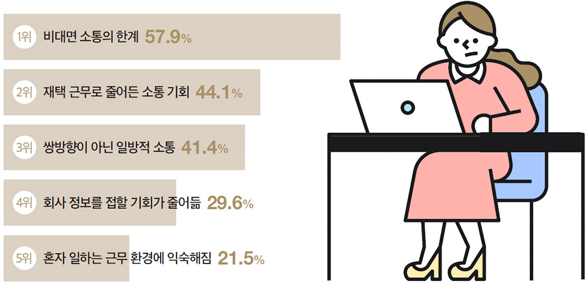
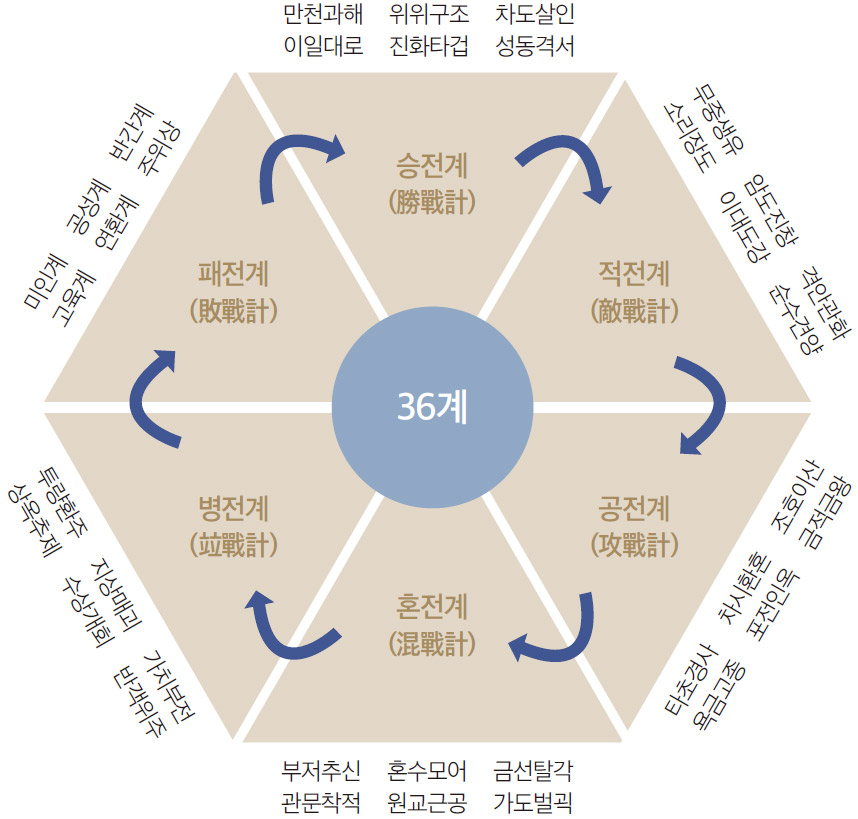

코로나19가 처음 이 땅에 상륙한 지 어언 2년 여가 다 되어간다. 정확히 지난 해 벽두인 1월 중순부터 소란을 피웠으니 사상 유례가 없는 고난이다. 아직도 언제 종식될 지 모르는 상황이라 세인들의 심신을 피곤하게 만들고 있다. 그나마 2019년 4차 산업혁명에 대하여 잔뜩 분위기를 조성한 탓에 기업들은 순발력 있게 각종 업무용 디지털 플랫폼을 활용하여 비대면 문화로 자연스럽게 접목하는 계기가 되었다. 이제 일상이 되어가는 디지털 문화는 “디지털 리더십의 발휘”라는 새로운 가치를 요구하고 있다.
코로나19에 의한 변화된 일터
독일의 심리학자인 쿠르트 레빈(Kurt Lewin)은 변화의 대응에 대하여 “unfreezing(해빙)-changing(변화)-refreezing(재동결)” 3단계로 설정하고 변화의 과정을 설명하고 있다. 여기에 대입하여 살펴보면 아마도 해빙기(unfreezing)인 초기(2020년도 상반기)까지는 코로나19의 파장을 살피는 시점으로 어떻게 대응해야 하는가에 집중적으로 분석하여 대응 방식을 설정하는 시기였다. 당시 기업을 비롯하여 모든 일상은 대면을 중지한 채 부산하게 대응책을 마련하고 있었으며 현상을 해석하는 데 총력을 기울이는 상황이었다. 이윽고 장기화된다는 판단으로 모든 업무를 비대면으로 진행하는 등 온라인으로 컨택을 하는 방식이 급격하게 진전되어 그해 하반기부터 비대면이 활성화되기 시작하였다. 기업들은 채용에서 교육에 이르는 모든 HR 업무를 비대면으로 전환하여 AI 채용시스템을 도입하거나, SNS를 활용한 비대면(UCC, UGC) 솔루션에 의한 동영상 스티리밍 또는 인터넷 접속으로 이루어지는 각종 비대면 세미나, 회의, 교육을 진행하는 상황에 이르렀다.
그러다 최근(2021년 11월부터)에 이르러 예방 백신 접종률이 70%를 넘기며 위드 코로나가 실행되면서 감기처럼 함께 공존하는 모델로 의식의 전환을 선포하고 조금씩 일상을 회복하는 상태로 전환하고 있다. 그러나 여전히 기승을 부리고 있는 확진자 수와 불안한 마음은 아무리 공존을 외쳐도 사실상 예전 일상으로의 전환은 어려울 것이라는 생각이 지배적이다.
이제 자연스럽게 비대면이 활성화되었고, 모든 회의를 화상회의 솔루션에 의하여 진행하거나 여러 지침이나 교육 사항을 비대면 툴에 의하여 접하게 되는 변화를 겪게 되었다. 마침 스마트 폰이나 각종 테블릿 PC를 통하여 업무를 효율적으로 수행하는 방식에 능숙한 젊은 세대(소위 MZ세대)가 이제 막 직장으로 유입되는 시기인지라 거침없는 그들은 너무나 자연스럽게 동화되고 두렵게 느낄 선배의 입김을 줄일 수 있었으며 간섭을 덜 받는 행운의 시기를 보내고 있다.
[표 1] 코로나19의 시기별 HR 대응 방식
단계
시기
주요 현상
HR 대응 방식
1기(초기)
2020년 1~6월
해빙(unfreezing): 대응 방안 모색 시기
대면적 활동 중단, 비대면 의사 결정
2기(중기)
2020년 7월~2021년 10월
변화(changing): 예방 접종과 비대면 활성화
비대면 업무 솔루션의 도입 및 활용
3기(최근)
2021년 11월부터
재동결(refreezing): 위드 코로나 시기 진입
조심스러운 대면 활동 재개
직장인의 가치관 변화
코로나19로 인해 가장 도드라진 현상은 퇴근한 후의 일상일 것이다. 이전에는 의당 삼삼오오 무리를 이루어 각종 회식이며 업무를 종료한 후의 여담을 즐기던 일상이 갑자기 근절된 것이다. 사실상 선배는 일터보다 퇴근한 후 존재감이 빛나기 마련이다. 회식 장소를 빌어 업무를 재해석하거나 의사결정 등의 판단을 해오던 방식이 갑자기 사라지니 판단력이 모호하고 인적인 연대가 약해지면서 시니어들에겐 ‘위기’가, 주니어들에겐 ‘평화’가 찾아온 듯한 양상이 나타나고 있다.
특히 코로나19가 아니어도 세대 교체가 이루어지는 시점이 도래하고 있었다. 즉, 베이비부머(1954~1964년생) 세대가 그나마 직장생활을 버티고 있던 시점이었으나 많은 인원이 은퇴를 하게 되고 그만큼 젊은 세대가 신규로 진입하고 있는 현실이다. 코로나19로 채용이 활성화되기 어려운 가운데에서도 대기업에서는 수시 경력 채용이 빈발하게 이루어지거나, 공기업에서는 위험을 무릎쓰고서라도 신규 인력 채용을 감행하지 않으면 안 되는 인력 구조를 갖게 된 것이다. 그러다 보니 MZ(1990년대생 이후) 세대가 밀려오고 그들의 업무 방식이 제대로 조직에 필요한 인재로 교육 활동이나 직장 내에서 활발히 이루어져야 할 OJT(On the Job Training)가 부실한 채 업무 과제를 수행하게 되다 보니 업무 수행 방식이 기존의 관성과 불일치하는 경향이 빈발하고 있다.
이같은 분위기를 부추기는 요소로 각 기업들마다 코로나19 이후 일하는 방식이 디지털 활용이라는 유사한 패턴을 갖고 있으니 이것이 하나의 사회적 코드화가 되어 젊은 세대에 정착되고 있는 현실을 주지할 필요가 있다.
가장 큰 이슈를 살펴보면 다음과 같다. 첫째, 재택근무의 활성화다. 비록 온라인으로 연결되어 있으나 재택을 하면서 목표로 한 시점에 결과물을 제시하면 되는 형태상 선배의 눈치 없이 본인의 독자적 정보력으로 일을 하는 습성을 갖게 된 것이다. 이는 아마도 선배의 경험을 그다지 반영하지 않고도 문제를 해결할 수 있는 독자적인 해결책을 확립할 수 있다는 배경을 이루게 되었다. 따라서 비의존적이며 독자적인 주도성으로 일할 수 있다는 자연스런 현상이 발생하면서 선배의 존재감이 약화되는 경향이 나타나고 있다는 것이다.
둘째, 이렇게 의무적이든 비의무적이든 직원의 30% 내외를 재택으로 돌리다 보니 기업들은 기존 사무실 공간을 다이어트해도 문제가 없다는 것에 기인하여 스마트 오피스화하게 된다는 것이다. 그래서 기존의 고정된 사무공간을 줄이거나 아예 지정좌석제를 없애고 자율변동좌석제를 운영하는 회사가 점점 많아지고 있다. 가령, 100명의 직원이 있는 회사라면 50명석으로 만들되 변동좌석제로 만들고 나머지 공간은 카페, 회의실 등 편의시설을 만들어 운영하는 방식이다. 심지어 팀장이나 임원 등의 보직자까지도 자율변동좌석제로 운영하는 경우가 있다 보니 대학 도서관처럼 부담스러운 상사 곁에는 안 가려 하고 편한 사람끼리 서로 인접해 앉기 위해 자리를 잡아주는 경우도 성행하는 아이러니가 발생하고 있다. 이는 일부 IT회사에서는 이미 실행하고 있는 경우가 많다. 결과적으로 팀의 인원수가 줄어드는 현상을 초래하고 있으며 심지어는 팀원이 3명 내외로 구성되는 등 소규모로 쪼개지는 경향이 나타나기도 한다.
셋째, 그간 사용하였던 사내 그룹웨어가 단순 소통을 넘어 업무 수행을 위한 통합 플랫폼으로 확대되고 있다는 것이다. 따라서 출결은 기본이고 직원이 커뮤니케이션할 수 있는 상태인지 등을 한눈에 살필 수 있고, 화상회의든 교육이든 통합된 솔루션에 의해 모든 업무를 처리할 수 있다는 것이다. 가령, 기존의 카카오톡을 활용하여 정보나 자료를 나누던 방식을 더욱 확대한 사내 카카오워크라는 시스템으로 업무상 필요한 모든 정보가 연계되고 있고 플랫한 구조로 업무를 수행할 수 있게 된 것이다.
<그림 1>과 같이 코로나19 이후 직장에서 더 어려워진 요소에 대한 조사를 한 결과를 보면 분명 소통의 한계가 가장 높게 나타난 것은 사실이다. 그러나 혼자 일하는 근무 환경에 익숙해진 것에 대한 어렵다는 요소는 21.5%로 그렇게 높지 않게 나타난 것을 알 수 있다. 어느새 우리의 가치관이 독립적이고 주도적인 상태로 진전되고 있음을 알 수 있다고 보여진다.
[그림 1] 코로나19 이후 직장인 의식조사

출처 : 잡코리아(남녀 직장인 1,200명 대상 조사)
[표 2] 코로나19 이후의 업무 운용 도구
주요 변화 요소
적용 사항
HR 관리 포인트
세대 교체의 진전
시니어 그룹의 은퇴, MZ 세대의 등장
세대간의 갈등 봉합
스마트 오피스의 등장
자율출퇴근제, 자율변동좌석제, 공용공간의 확대
근무 환경의 변화
교육 방식의 변화
유튜브 스트리밍으로 사내 교육 운영, 비대면 교육으로 운영
자율적 역량 개발
디지털 리더십과 병법 36계
앞에서 살펴보았듯이 우리의 일터는 디지털 문화로 급격하게 진전되고 있다. 그동안 새로운 시스템을 접목하는 것이 효율적이라는 것을 알면서도 직원들에게 반발을 사거나 문화에 어울리지 않을 수 있다는 우려 등으로 검토만 하던 것이 갑작스럽게 전환된 것이다. 일하는 방식의 디지털 전환에 따른 가장 큰 피해자는 아마도 나이든 시니어 그룹일 것이다. 과거의 경험에 의하여 존재감을 형성해 온 가치가 존재감을 잃게 된 것이다. 물론 모든 경우가 그렇게 일반적으로 표현하기 어렵겠지만 비대면이 활성화된 만큼 그 영향력이 줄어든 것은 부인하기 어렵다.
지난 가을호에 실었던 36계와 HR 대응이라는 내용을 통해 코로나19 세태를 살펴보았다. 36계가 명청시대에 와서 5세기까지의 전투사 중 구전된 사례를 정리한 것인데, 승전계-적전계-공전계-혼전계-병전계-패전계에 이르는 6조는 마치 인생의 희로애락처럼 좋은 시절부터 어려운 시절에 이르기까지 처세에 응용하기 좋은 모형이라고 생각한다. 가령, 요즘 같은 코로나19 사태로 혼전계의 전략이 적용되어야 한다는 식의 응용은 대단히 무리일 수도 있다. 다만, 무수히 많은 조합이 가능하다는 것에 병법36계의 가치가 있다고 본다.
36계에 등장하는 계책들은 사실상 기만술에 해당한다. 모든 계책은 상대를 속이고 국면 전환을 이룬다는 내용이며, 작전을 사용해야 하는 현재의 상태가 좀 더 유리하거나 힘든 상황에 따라 음양의 궤를 조합하여 술책을 적용한다는 것이 핵심이다. 따라서 명청의 시대에 이르러 많은 계책을 조합하여 활용하고, 그 동안 주류를 이룬 손자병법에 비하여 다양한 변화를 준다는 것으로 판단해 본다면, 그것은 아마도 지금과 같은 디지털 문명이 적용된 새로운 병서로의 전환이 아닐까 싶다. 즉, 어떠한 상황에 처해 <그림 2>처럼 패전계의 연환계를, 승전계의 만천과해를, 적전계의 무중생유를 적용하는 것처럼 여러 가지를 조합한 전략을 사용할 수 있다는 것은 분명 그 시대에 매우 혁신적인 일이 아닐까 싶다.
세상은 변하기 마련이고 경험해 보지 않은 일이 갑작스럽게 닥치게 되는 게 우리의 일생일텐데, 36가지의 전술로 조합할 수 있는 모델이 있다는 것은 매우 유용한 도구가 아닐 수 없다. 지금은 전쟁이 없는 평화로운 시절이나 이처럼 코로나19와 같은 사태가 발생하여 대안을 찾아야 하는 일이 빈발하다. 아마도 36계는 이 같은 변화에 대응하는 처세술로 사용하는 것이 도움이 되는 메타포(metaphor; 비유)가 아닐까 싶다.
[그림 2] 병법36계 구조도

디지털 리더십의 대두
최근 코로나19 이후 직장의 업무 운영 도구를 제시한 <표 2>에서 살펴본 것과 같이 디지털 솔루션에 의하여 피생된 변화임에는 틀림없다. 자율 출퇴근을 하거나, 변동자율좌석제를 하거나, 비대면 솔루션에 의한 스마트한 업무 처리 등은 모두 다 디지털 솔루션이 지원되어야 할 수 있는 일이다. 그러한 상황에서 직장인들은 실무자이든 리더이든 누구를 막론하고 일하는 자세가 새로이 정립되어야 할 시점이다.
매경시사용어사전에 의하면 디지털 리더십 3.0에 대한 정의가 다음과 같이 설명되어 있다. “참여와 개방, 공유로 대변되는 웹 2.0 시대를 넘어 자율적 책임을 강화하고 국가 경쟁력에 실질적 성과를 주는 책임 지향의 리더십이다. 이러한 리더십을 실현하기 위해서는 실용, 실천, 실감의 ‘3실 전략’이 필요하다.”
이것이 시사하는 바는 요즘 같은 디지털 시대에는 누구를 막론하고 “자율과 책임”을 의식하며 일해야 한다는 것일 게다. 이는 현재 다양한 디지털 솔루션을 활용해 스마트하게 일하는 특성상 비대면이 일상화되어 있고, 상호간에 인접하지 않은 채 공간을 초월하고 있으며, 또한 같은 건물에 있다 하여도 근접하지 않은 채 일하는 여건이 더욱 빈발해지는 상황에서 갖추어야 할 자세일 것이다.
따라서 디지털 시대의 리더십을 발휘하기 위한 3가지 요소를 살펴보고, 이를 기반으로 한 채용과 육성의 방향을 어떻게 확립할 것인지 점검해보자.
첫째, 자율성이다. 누가 보던 안 보던 주어진 역할을 수행할 수 있는 마음자세를 갖춰야 한다. 이를 위해서는 통제력이 있어야 하며, 협력적인 자세를 보여야 한다. 둘째, 책임감이다. 이는 목표로 한 시점에 결과물을 제시해야 하는 당위성을 갖고 있어야 한다는 것이다. 함께 일하는 동료의식이 약한 상태인지라 자신의 상태를 노출하고 상태를 공유하는 개방성이 요구되기 때문이다. 셋째, 실행력이다. 디지털 솔루션에 의한 이진법적인 체크 요소가 과연 실행되었는가에 대한 의구심이 드는 경우가 빈발하다. 따라서 실행에 대한 확실한 의사 표시가 무척 중요하다.
결론적으로 디지털 리더십은 상사나 선배에게만 요구되는 것이 아니라는 점이다. 직장인이라면 누구나 자신의 업무를 자율적이며 책임감 있게 수행하는 의식이 강화되어야 한다. 특히 상사의 경우는 생존을 위해서는 부득이 젊은 세대처럼 디지털 솔루션에 익숙해지도록 신속하게 적응해야 함과 동시에 리더로서 존재감을 형성하는 카리스마를 찾아내야 한다. 그러기 위해서는 후배의 도움 없이도 스스로 문제를 해결하는 실행력을 갖추고 디지털 리더십을 발휘해야 생존할 수 있다는 것을 기억하자.